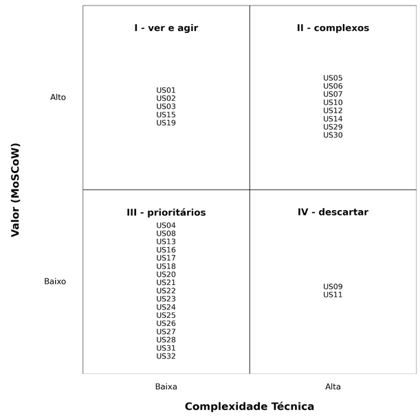

Backlog do Produto
Esta seção descreve o backlog de produto, uma lista priorizada de todas as funcionalidades e melhorias planejadas para o software. A priorização foi realizada com base no modelo MoSCoW(Must Have, Should Have, Could Have, Won’t Have por agora), considerando os objetivos estratégicos do projeto e os requisitos funcionais definidos. O MVP (Produto Mínimo Viável) será composto pelos itens classificados como Must Have.
Os requisitos funcionais mapeados neste backlog foram derivados a partir de três objetivos estratégicos principais, definidos em alinhamento com as necessidades da plataforma e dos usuários:
- Objetivo 1 – Aumentar captação de clientes em %
- Objetivo 2 – Reduzir a sobrecarga de atendimentos iniciais repetitivos
- Objetivo 3 – Oferecer informações e apoio ao intercambista durante o período no exterior
Esses objetivos servem como base para a estruturação e priorização dos itens do backlog, garantindo que as funcionalidades estejam alinhadas com as metas do projeto.
Backlog Geral
O backlog geral contém todas as funcionalidades e melhorias planejadas para o software. Cada item é detalhado e priorizado para garantir uma visão clara do que será desenvolvido ao longo do projeto.
| Código RF | Requisito | Código US | User Story | Referente a | Épico |
|---|---|---|---|---|---|
| RF01 | Registrar-se como potencial intercambista, preenchendo dados básicos (nome, sobrenome, email, telefone com DDD, cidade, qual a unidade mais próxima do usuário, senha, confirmar senha) | US01 | Como potencial intercambista, quero me registrar preenchendo meus dados básicos para criar uma conta na plataforma. | Potencial Intercambista | EP01 - Cadastro e Acesso |
| RF02 | Fazer login na plataforma como potencial intercambista, intercambista e administrador | US02 | Como usuário da plataforma, quero fazer login com minhas credenciais para acessar meu ambiente personalizado. | Todos os usuários | EP01 - Cadastro e Acesso |
| RF03 | Editar perfil na plataforma como potencial intercambista e administrador | US03 | Como usuário, quero editar meu perfil na plataforma para manter minhas informações atualizadas. | Potencial Intercambista | EP01 - Cadastro e Acesso |
| RF04 | Excluir conta da plataforma como potencial intercambista, intercambista e administrador | US04 | Como usuário, quero excluir minha conta da plataforma para encerrar meu vínculo com o sistema. | Potencial Intercambista | EP01 - Cadastro e Acesso |
| RF05 | Responder um teste para identificar o perfil ideal de intercâmbio do usuário com base nas respostas. | US05 | Como potencial intercambista, quero responder um teste para descobrir qual programa combina mais com meu perfil. | Potencial Intercambista | EP02 - Testes e Quizzes |
| RF06 | Navegar por programas | US06 | Como potencial intercambista, quero navegar por programas. | Potencial Intercambista | EP03 - Navegação e Exploração de Programas |
| RF07 | Responder um quiz específico sobre os programas da Canada Intercambio para verificar o entendimento do usuário sobre as opções disponíveis. | US07 | Como potencial intercambista, quero responder um quiz sobre os programas da Canada Intercambio para verificar meu entendimento sobre as opções. | Potencial Intercambista | EP02 - Testes e Quizzes |
| RF08 | Responder um quiz de nivelamento de inglês com perguntas objetivas elaboradas para avaliar o domínio da língua. | US08 | Como potencial intercambista, quero responder um quiz de nivelamento de inglês para saber meu nível de domínio da língua. | Potencial Intercambista | EP02 - Testes e Quizzes |
| RF09 | Responder um quiz sobre aspectos culturais e geográficos do Canadá. | US09 | Como potencial intercambista, quero responder um quiz sobre cultura e geografia do Canadá para me preparar melhor para o intercâmbio. | Potencial Intercambista | EP02 - Testes e Quizzes |
| RF10 | Visualizar sugestão de programa com base nas respostas dos quizzes e testes. | US10 | Como potencial intercambista, quero visualizar sugestões de programas com base nas respostas dos quizzes para facilitar minha decisão. | Potencial Intercambista | EP03 - Navegação e Exploração de Programas |
| RF11 | Simular o custo estimado dos programas de intercâmbio | US11 | Como potencial intercambista, quero simular o custo estimado dos programas de intercâmbio para planejar meus gastos. | Potencial Intercambista | EP03 - Navegação e Exploração de Programas |
| RF12 | Visualizar respostas para dúvidas frequentes | US12 | Como potencial intercambista, quero visualizar respostas para dúvidas frequentes para esclarecer minhas principais questões. | Potencial Intercambista | EP03 - Navegação e Exploração de Programas |
| RF13 | Acessar uma área com promoções ativas. | US13 | Como potencial intercambista, quero acessar uma área com promoções ativas para aproveitar oportunidades de desconto. | Potencial Intercambista | EP03 - Navegação e Exploração de Programas |
| RF14 | Visualizar informações detalhadas de cada programa (duração, país, valor, requisitos) | US14 | Como potencial intercambista, quero visualizar informações detalhadas de cada programa para comparar e escolher o melhor para mim. | Potencial Intercambista | EP03 - Navegação e Exploração de Programas |
| RF15 | Solicitar contato com um especialista da Canada Intercambio | US15 | Como potencial intercambista, quero solicitar contato com um especialista da Canada Intercambio para esclarecer dúvidas sobre os programas. | Potencial Intercambista | EP04 - Suporte e Contato |
| RF16 | Editar perfil na plataforma como intercambista já matriculado (como contato de emergência) | US16 | Como intercambista já matriculado, quero editar meu perfil para atualizar informações como contato de emergência. | Intercambista | EP01 - Cadastro e Acesso |
| RF17 | Acessar o contrato digital assinado do programa de intercâmbio contratado. | US17 | Como intercambista, quero acessar meu contrato digital assinado para consultar detalhes do meu programa. | Intercambista | EP05 - Área do Intercambista |
| RF18 | Visualizar atividades no cronograma do programa de intercâmbio | US18 | Como intercambista, quero visualizar as atividades no cronograma do meu programa de intercâmbio para acompanhar minha jornada. | Intercambista | EP05 - Área do Intercambista |
| RF19 | Criar conta como empresa preenchendo dados básicos (nome, sobrenome, email corporativo, senha, confirmar senha, número, função, filial) | US19 | Como empresa, quero criar uma conta preenchendo meus dados básicos para utilizar a plataforma de intercâmbio. | Empresa | EP01 - Cadastro e Acesso |
| RF20 | Alterar tipo de conta de um potencial intercambista para uma conta de intercambista após um fechamento de contrato. | US20 | Como empresa, quero alterar o tipo de conta de um potencial intercambista para intercambista após o fechamento de contrato para refletir o status atual. | Empresa | EP06 - Gestão da Conta Corporativa / Empresa |
| RF21 | Consultar informações preenchidas e perfil do potencial intercambista para atendimento. | US21 | Como empresa, quero consultar as informações e o perfil de um potencial intercambista para realizar um atendimento mais assertivo. | Empresa | EP06 - Gestão da Conta Corporativa / Empresa |
| RF22 | Consultar respostas e recomendações do quiz do programa | US22 | Como empresa, quero consultar as respostas e recomendações do quiz do programa para entender o perfil do intercambista. | Empresa | EP06 - Gestão da Conta Corporativa / Empresa |
| RF23 | Consultar o nível de inglês do aluno baseado no quiz | US23 | Como empresa, quero consultar o nível de inglês do aluno baseado no quiz para indicar os programas adequados. | Empresa | EP06 - Gestão da Conta Corporativa / Empresa |
| RF24 | Ver desempenho do aluno no quiz cultural | US24 | Como empresa, quero ver o desempenho do aluno no quiz cultural para avaliar seu conhecimento sobre o Canadá. | Empresa | EP06 - Gestão da Conta Corporativa / Empresa |
| RF25 | Cadastrar o contrato do intercambista na plataforma | US25 | Como empresa, quero cadastrar o contrato do intercambista na plataforma para formalizar a contratação. | Empresa | EP06 - Gestão da Conta Corporativa / Empresa |
| RF26 | Inserir as atividades no cronograma de cada programa | US26 | Como empresa, quero inserir as atividades no cronograma dos programas para organizar a agenda dos intercambistas. | Empresa | EP06 - Gestão da Conta Corporativa / Empresa |
| RF27 | Editar as atividades no cronograma de cada programa | US27 | Como empresa, quero editar as atividades no cronograma para manter o planejamento atualizado. | Empresa | EP06 - Gestão da Conta Corporativa / Empresa |
| RF28 | Adicionar promoções | US28 | Como empresa, quero adicionar promoções para atrair mais potenciais intercambistas. | Empresa | EP06 - Gestão da Conta Corporativa / Empresa |
| RF29 | Atualizar informações de programas existentes | US29 | Como empresa, quero atualizar informações de programas existentes para garantir que os dados estejam corretos e atualizados. | Empresa | EP06 - Gestão da Conta Corporativa / Empresa |
| RF30 | Cadastrar novos programas de intercâmbio | US30 | Como empresa, quero cadastrar novos programas de intercâmbio para expandir a oferta da plataforma. | Empresa | EP06 - Gestão da Conta Corporativa / Empresa |
| RF31 | Inserir dados de novos intercambistas contratados | US31 | Como empresa, quero inserir os dados de novos intercambistas contratados para começar o acompanhamento do programa. | Empresa | EP06 - Gestão da Conta Corporativa / Empresa |
| RF32 | Excluir conta do intercambista após a conclusão do programa | US32 | Como empresa, quero excluir a conta de um intercambista após a conclusão do programa para manter o sistema limpo e organizado. | Empresa | EP01 - Cadastro e Acesso |
Priorização do Backlog Geral
A priorização de valor de negócio foi feita com base na técnica MoSCoW, conforme descrito abaixo:
- Must Have (Essenciais): Funcionalidades sem as quais o MVP não é viável. Devem ser entregues obrigatoriamente na primeira versão.
- Should Have (Importantes): São importantes, mas podem ser entregues após o MVP sem comprometer sua funcionalidade.
- Could Have (Desejáveis): Funcionalidades de valor, mas que não impactam diretamente os objetivos iniciais.
- Won’t Have (Por enquanto): Não serão consideradas neste ciclo de desenvolvimento.
Para definir essa classificação, aplicamos uma metodologia baseada em três perguntas-chave (perguntas-passe), com o objetivo de pontuar cada história de usuário de 0 a 3:
1. A funcionalidade é essencial para captar clientes nos dois primeiros meses? 2. Ela é necessária para que o usuário conclua um ciclo básico na plataforma (descoberta → teste → contato)? 3. Se não for feita agora, causará perda de valor ou impacto alto no MVP?
Cada resposta afirmativa somou 1 ponto. As histórias com 3 pontos foram classificadas como Must, com 2 pontos como Should, com 1 ponto como Could, e com 0 ponto como Won’t.
Para a priorização técnica, aplicamos uma metodologia baseada em três perguntas-chave (perguntas-passe), com o objetivo de pontuar cada história de usuário de 1 a 4, considerando os principais obstáculos que podem dificultar sua implementação. Quanto maior a pontuação total, maior o esforço necessário.
1. A tarefa envolve lógica difícil, uso de tecnologias novas ou integrações técnicas complexas? 2. A tarefa vai demandar muitos dias úteis para ser concluída? 3. Essa tarefa depende de APIs de terceiros, serviços externos ou parceiros fora do nosso controle?
Feitas as duas priorizações, classificamos cada uma em A (alto, >=2) ou B (baixo, <2), e dividimos em quadrantes:
- I - AB - Ver e agir
- II - AA - Complexos
- III - BB - Prioritários
- IV - BA - Descartar
O diagrama de quadrantes fica da seguinte forma:

Também levamos em consideração as diretrizes estratégicas da empresa:
- A prioridade principal é captar clientes.
- A área do intercambista não será foco do MVP.
- A área da empresa precisa garantir autonomia para cadastrar e editar seus próprios programas.
Tabela
| Código | User Story | Pontuação MoSCoW | Classificação MoSCoW | Pontuação Técnica | Classificação |
|---|---|---|---|---|---|
| US01 | Como potencial intercambista, quero me registrar preenchendo meus dados básicos para criar uma conta na plataforma. | 3A | Must Have | 1B | AB - 1 |
| US02 | Como usuário da plataforma, quero fazer login com minhas credenciais para acessar meu ambiente personalizado | 3A | Must Have | 1B | AB - 1 |
| US03 | Como usuário, quero editar meu perfil na plataforma para manter minhas informações atualizadas. | 2A | Should Have | 1B | AB - 1 |
| US04 | Como usuário, quero excluir minha conta da plataforma para encerrar meu vínculo com o sistema. | 1B | Could Have | 1B | BB - 3 |
| US05 | Como potencial intercambista, quero responder um teste para descobrir qual programa combina mais com meu perfil. | 3A | Must Have | 3A | AA - 2 |
| US06 | Como potencial intercambista, quero navegar por programas. | 3A | Must Have | 2A | AA - 2 |
| US07 | Como potencial intercambista, quero responder um quiz sobre os programas da Canada Intercambio para verificar meu entendimento sobre as opções. | 3A | Should Have | 2A | AA - 2 |
| US08 | Como potencial intercambista, quero responder um quiz de nivelamento de inglês para saber meu nível de domínio da língua. | 1B | Could Have | 2B | BB - 3 |
| US09 | Como potencial intercambista, quero responder um quiz sobre cultura e geografia do Canadá para me preparar melhor para o intercâmbio. | 1B | Could Have | 2A | BA - 4 |
| US10 | Como potencial intercambista, quero visualizar sugestões de programas com base nas respostas dos quizzes para facilitar minha decisão. | 3A | Must Have | 3A | AA - 2 |
| US11 | Como potencial intercambista, quero simular o custo estimado dos programas de intercâmbio para planejar meus gastos. | 1A | Should Have | 3B | BA - 4 |
| US12 | Como potencial intercambista, quero visualizar respostas para dúvidas frequentes para esclarecer minhas principais questões. | 3A | Must Have | 2A | AA - 2 |
| US13 | Como potencial intercambista, quero acessar uma área com promoções ativas para aproveitar oportunidades de desconto. | 1B | Should Have | 1B | BB - 3 |
| US14 | Como potencial intercambista, quero visualizar informações detalhadas de cada programa para comparar e escolher o melhor para mim. | 3A | Must Have | 2A | AA - 2 |
| US15 | Como potencial intercambista, quero solicitar contato com um especialista da Canada Intercambio para esclarecer dúvidas sobre os programas. | 3A | Must Have | 1B | AB - 1 |
| US16 | Como intercambista já matriculado, quero editar meu perfil para atualizar informações como contato de emergência | 1B | Could Have | 1B | BB - 3 |
| US17 | Como intercambista, quero acessar meu contrato digital assinado para consultar detalhes do meu programa. | 1B | Could Have | 1B | BB - 3 |
| US18 | Como intercambista, quero visualizar as atividades no cronograma do meu programa de intercâmbio para acompanhar minha jornada | 1B | Could Have | 1A | BB - 3 |
| US19 | Como empresa, quero criar uma conta preenchendo meus dados básicos para utilizar a plataforma de intercâmbio. | 3A | Must Have | 1B | AB - 1 |
| US20 | Como empresa, quero alterar o tipo de conta de um potencial intercambista para intercambista após o fechamento de contrato para refletir o status atual. | 1B | Could Have | 1B | BB - 3 |
| US21 | Como empresa, quero consultar as informações e o perfil de um potencial intercambista para realizar um atendimento mais assertivo. | 1B | Should Have | 1B | BB - 3 |
| US22 | Como empresa, quero consultar as respostas e recomendações do quiz do programa para entender o perfil do intercambista. | 1B | Should Have | 1B | BB - 3 |
| US23 | Como empresa, quero consultar o nível de inglês do aluno baseado no quiz para indicar os programas adequados. | 1B | Should Have | 1B | BB - 3 |
| US24 | Como empresa, quero ver o desempenho do aluno no quiz cultural para avaliar seu conhecimento sobre o Canadá. | 1B | Should Have | 1B | BB - 3 |
| US25 | Como empresa, quero cadastrar o contrato do intercambista na plataforma para formalizar a contratação. | 1B | Could Have | 1B | BB - 3 |
| US26 | Como empresa, quero inserir as atividades no cronograma dos programas para organizar a agenda dos intercambistas. | 1B | Could Have | 1B | BB - 3 |
| US27 | Como empresa, quero editar as atividades no cronograma para manter o planejamento atualizado. | 1B | Could Have | 1B | BB - 3 |
| US28 | Como empresa, quero adicionar promoções para atrair mais potenciais intercambistas. | 1B | Should Have | 1B | BB - 3 |
| US29 | Como empresa, quero atualizar informações de programas existentes para garantir que os dados estejam corretos e atualizados. | 3A | Must Have | 2A | AA - 2 |
| US30 | Como empresa, quero cadastrar novos programas de intercâmbio para expandir a oferta da plataforma. | 3A | Must Have | 2A | AA - 2 |
| US31 | Como empresa, quero inserir os dados de novos intercambistas contratados para começar o acompanhamento do programa. | 1B | Could Have | 1B | BB - 3 |
| US32 | Como empresa, quero excluir a conta de um intercambista após a conclusão do programa para manter o sistema limpo e organizado. | 1B | Could Have | 1B | BB - 3 |